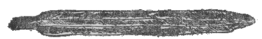
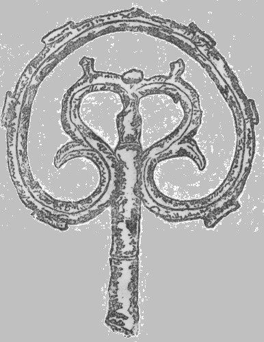

| 越中劒岳 | |
| 木暮 理太郎 | |
| (2015) | |
越中劒岳
木暮理太郎
日本アルプスの大立物の中で、最後に登られてしかも今でも最も人気を集めている山は、恐らく立山連峰の劒岳であろう。この山は古来登山者絶無と称せられ、望見した姿も断崖と絶壁とで成り立った岩の山であって、近く別山
の頂上あたりから眺めても何処をどう登ったものか見当のつけようがない。それ所
か眤
と見ている中
に大抵の人は恐ろしくなって、始めの勢
は何処へやら、あれを登ってやろうというような考
は、朝日に解ける霜のように消えてしまうのである。まず斯様
な次第で登山者絶無と称されていたのかも知れない。陸地測量部の人達が怖れて進むを欲しない人夫を励して、此
山の絶頂に四等測点を建てることに成功したのは明治四十年の七月であった。これで昔弘法大師が草鞋千足を費しても登り得なかったという伝説のある劒岳へ、初めて人間の足跡を印したことになった。然
るに測量部員が頂上に達した時、其処
に錆
た槍の穂と錫杖
の頭とを発見した。のみならず頂の直下でやや北に寄った所に在る岩窟の中に、焚火でもしたものか炭の破片が残っていた。この事実は明
に古来登山者絶無と称せられていた山に、いつの頃か勇猛な僧侶か山伏などが、登山したことを証するものであるが、その何人
であり何年頃の事であったかは、遺憾ながら知ることが出来ない。又
槍の穂や錫杖の頭は、登山者が紀念の為に残したものか、或は異変の為に殪
れて、持物だけが暴風にさえも吹き飛ばされずに残ったものか、それらも到底判然する時期はあるまいと思われる。

●劒岳の頂上にて発見せし槍の穂（実物は長さ一尺）

●同じく劒岳の頂上にて発見せる錫杖の頭
劒岳は最近には測量部員に依って初めて登山された。これは疑う余地もないようであるが、有力という程でもないが兎
に角
競争者があるのは妙である。其
競争者というのは芦峅寺
の佐伯某というもので、明治三十九年の九月に、此山の裏手毛勝
谷の東北面に当る緩傾斜地を登って頂上に出たようである。惜しいことには夫
が本人の記述ではなく、唯
だ其談話を筆記したものであるから、頗る要領を得ない書き方であるのは残念である。毛勝谷というのが劒岳の北裏にあることは未だ聞かない。私の想像する所では早月川（地図の立山川）と白萩川とに挟まれた尾根に取り付いて、そこから登ったものではなかろうかと思われる。けれども此尾根を登って絶頂へ出るには、充分二日は懸るから、登山に一日下山に一日を要すという談話と一致しない。其上若
し頂上に登ったものとすれば、彼の測量部員が発見した槍の穂と錫杖の頭との中、どれか一つ位見当りそうなものである。考えると幾多の疑問が生ずるのであるが、絶頂迄は登らなかったとしても、連脈中の一峰か又は頂上近くまで登ったものと見てよかろう。そう信じて置くのが至当であろうと思う。
かくも最初の登山或は寧ろ登山口を探すのに骨の折れた劒岳が、今では有
らゆる登山路を探究し尽され、これ迄は唯いかめしく怖ろしげな山とのみ見られたのが、急に親しみのある懐しい山と変って、登山者の人気を集中するに至ったのは、山の姿の如何にも豪宕
であること、残雪の極めて多量なること、危険を無理にさえ冒さなければ、誰も持って生れた冒険心を適度に満足せしめ得ること等に原因するものであろう。後立山山脈から眺めた劒岳は、其東南面に平蔵谷、長次郎谷、三窓
、小窓、大窓と白竜の夭喬たる如き五条の大雪渓を懸け連ねて、立山を凌ぐ程の立派さである。更に近く劒沢の大雪渓の上に立ってこの岩の殿堂を振り仰ぐと、多量の万年雪に尽
く其岩屑を運び去られた柱や壁や屋根は、偃松
其他の高山植物が青苔の蒸したように生えて、四近に溢るる黝
い色は、この大伽藍に何ともいえぬ落
ついた重みのある感じを与える。これらの事が一度此山に接した者をして嘆美措く能
わざらしむる所以
であろう。
日本の山で其名に劒又は剣の字を有するものは少くない。四国の剣山、五剣山、剣尾山などは著明な例であるが、孰
れも二千米に足りない山で、且
つ其山容も名に相応しているとはいえないものがある。又山の最高点若しくは頂上の一峰を剣ヶ峰と呼んでいる例は、富士山、御岳、乗鞍岳、上野の武尊
山、其他尚
お多いのであるが、これは山の一部分に限られた称呼で比較にはならない。独り劒岳は二千九百九十八米即ち三千米（最近の測量に拠
れば三千三米）と称して差支ない高度を保って、而
も剣戟沖天の有様を呈した山容は、槍穂高を除けば南北日本アルプスを通じて之
に比す可
きものがない。これ程劒の名にふさわしい山は従って他に類がないのである。
劒岳の登路は尾根伝い及び谷伝いの二つに大別することが出来る。前者は別山から鶴ヶ御前山を経て尾根伝いに登るもの（南口）と、小窓若しくは三窓の雪渓を登って尾根を伝うもの（東口）と、早月川と白萩川との間の尾根を登るもの（北口）と、都合三つの登路がある。此中東口は尾根伝いと谷伝いと相半ばしている。後者は平蔵谷を登って別山からの路に合するものと、長次郎谷を上って頂上直下に出るものと、尾根伝いをする為に小窓若くは三窓を登るもの（東口）と、矢張
三つの路を数えることが出来る。此中最も楽なのは長次郎谷を登るものであって、測量部員が初めて頂上に達した時も此路に依ったのであった。
尾根の路の中では北口が困難である代りに危険の度は最も少ない。唯だ尾根が頂上と連絡するあたりが残雪の少ない年には、反
って多少面倒であるかも知れぬが、勿論大したことはあるまい。白萩川が池ノ谷と大窓の谷とに岐れている少し下流から、右に支渓を遡って一九二〇米の三角点附近に出で、夫から偃松や灌木の密叢を押分け、二六〇〇米の附近からは嶄岩の横をからみ、急峻な雪渓の上部を横断して幾つかの小隆起を越え、終
に頂上に達するのである。夫で早朝白萩川を離れて尾根の登りに懸っても、一九二〇米の三角点に達する迄に殆ど一日を費し、其翌日は辛くも頂上に達することは出来ても、頂上には燃料がないから野営には不都合である。それで寧ろ尾根上の適当なる地点に一泊し、翌早朝頂上に登る方が便利だ。尚この尾根ならば荷物を持って登り得るので、帰りに長次郎谷を下れば荷厄介となる心配はない。劒の登山路の中で、兎も角も荷物を持って登れる路はこの外には無いのである。此尾根から初めて劒岳に登った人は冠松次郎
君で大正六年の七月であった。
南口は別山に続く尾根を辿るものであって、鶴ヶ御前を北に下ると草原を水がだぶだぶ流れている好い野営地がある。夫から草山を一つ越すと劒の南に続く峰の登りに懸って、岩と偃松の間を押し分け乗り越えて進んで行くと、平蔵谷の上部を取り巻く岩壁の上に出る。此附近が最も悪場であるから、注意を怠ると危い目に遭わぬとも限らぬ。其処を過ぎればさしたることなく頂上に達せられる。鶴ヶ御前から二時間半の行程である。室堂
を午前五時頃に出発すれば日帰りの出来る道程である。此路は大正二年七月に近藤茂吉
君が下山の際初めて通過し、同年八月に私は南日
、中村の二君と逆に之を登った。今では此路を通るものが相当にあるようである。
東口は三窓の雪渓を登るのが、既に一仕事である上に、更に三窓の頭まで登って尾根を縦走しなければならないので、此路を取る人は殆ど無いと称してよい程である。尾根伝いの間は左程危険な場所もないが、相当に骨は折れる。三窓の雪渓は劒岳に懸るものの中で最も長く且つ急でもあるから、登りに二時間を要する。窓の底部からは西側を右にからんで更に左に登り、一時間で三窓の頭に達し、其処から尾根を伝えば一時間半の後には絶頂の人となり得る。此道は大正四年の七月に私と南日君とで登ったのが最初の試みではなかろうか。
小窓と三窓との間は劒岳の尾根の中で、縦走に最も困難であり且つ危険な場所であって、初めての人には綱を要するのであろうが、綱が無ければ通過不可能という程ではない。三窓の底部から右に大岩の根元を廻って行くと、小窓の頭の最高点との間に在る岩の大きな裂け目にぶつかる。之を通過するのが骨折仕事なのである。それでも注意して上の方で路を探せば、通れる所が見当るであろう。大正二年八月に吉沢庄作君は小窓から登って此処に達した時、この裂け目の為に三窓へ出られないで、元の路を引返した。其後船田三郎君や斎藤新一郎君などが初めて此処を通過された。
小窓の雪渓は東から登っても西から登っても楽であるから、劒沢から、伊折方面へ、又は伊折から劒沢へ入り込むには、早月川を上下して別山乗越
を登降する迂路よりも遥
に便利である。唯だ残雪の少ない年の八月中旬頃になると、西側の雪渓が途切れる虞
があるから注意を要する。池ノ谷も雪の多い間は通行容易であるが、此谷は幅狭く、入口に近く高い瀑があり、且つ右岸の絶壁から頻々
と、時季によって雪崩や石が墜ちるので甚だ危険である。
三窓の雪渓が劒沢と合流する所には岩窟があって、少し陰鬱ではあるが安全なる野営地である。池ノ平にあった小黒部鉱山の飯場は、登山者に好都合であったが、鉱山と共に今は廃滅に帰して了
った。大窓は小黒部方面から伊折へ行くには要用な通路で、其大雪渓は頗る立派なものである。
沢伝いに劒へ登る最も近い路は平蔵谷であろう。夫にしても雪渓が可
なり急なので、慣れぬ人には登攀困難である。且つ其上部の岩壁は前に記した如く悪場であるから、好んで取る可き路ではない。此谷を平蔵と名付けたのは、芦峅の佐伯平蔵の名を採ったのであるけれども、平蔵が始めて此谷を上下した為ではない。始めてこれを下ったのは宇治長次郎で、一般の登山者では冠君である。夫を長次郎谷は既に有るからというので、近藤君が連れていた人夫の平蔵の名を之に与えたのが其儘
通用するようになったのである。此谷と劒沢との出合に天幕を張るに好い場所がある。長次郎谷を登る人も其処に野営する方が割合に暖で且つ便利であろう。
長次郎谷は宇治長次郎の名を取って命名したもので、測量部員を導いて此谷から劒の頂上へ達せしめたのは彼一人の功でなかったにしても、其後に於ける劒岳の案内者としての功労から推して、至当の命名であるといえる。此谷を上り詰めると殆ど頂上直下に出で、其処から絶頂まで二十分で達せられる。雪渓は三窓ほど長くはないが、急であるから二時間乃至
三時間を要する。尤も下りは一時間と二十分あれば足りる。途中に熊の岩というのがあって、其辺から勾配が次第に急となり、更に上ると雪渓が分岐するが、左へ取って登ればよい。雪が少くなると七合目辺と思われるあたりに、全渓を横断して深い雪の裂け目が現れる。そうなると之を越すのが一仕事である。明治四十年に測量部員が登り、四十二年に石崎光瑶君の一行が登山者として先鞭を着けてから、劒岳の登攀といえば、極
ったように此谷を上下していたものであった。夫が前に記したように異った登路が探究され発表されるに従って、それらの登路に依る人も次第に増して来ると共に、婦人の登山者さえも現れて、劒登山の全盛期を出現するに至ったのである。
劒岳の登路は大略右に述べた通りである。今後更に探究の歩が進められるようになれば、三窓へ続く八ツ峰の岩峰や、頂上直下から平蔵谷と長次郎谷との間へ派出した急峻な岩稜などが、さしあたり登攀の興味の中心となるのではないかと予想されるのである。
（大正一一、七『武俠世界』）
底本：「山の憶い出 下」平凡社ライブラリー、平凡社
１９９９（平成11
）年7
月15
日初版第1
刷
底本の親本：「山の憶ひ出 下巻」龍星閣
１９４１（昭和16
）年8
月20
日再刷
初出：「武俠世界」
１９２２（大正11
）年7
月
※底本は、物を数える際や地名などに用いる「ヶ」（区点番号5-86）を、大振りにつくっています。
※図版は、底本の親本からとりました。
入力：栗原晶子
校正：雪森
２０１４年6
月12
日作成
青空文庫作成ファイル：
このファイルは、インターネットの図書館、青空文庫（http://www.aozora.gr.jp/）で作られました。入力、校正、制作にあたったのは、ボランティアの皆さんです。